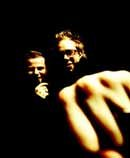

Zjistil jsem, že jeden z žánrů hudby, který je mi hodně blízký, se jmenuje big beat. Zjištění to však bylo docela zarážející, protože jsem si do té doby pod pojmem „bigbít“ představoval něco úplně jiného… Bigbít totiž v Česku opravdu znamená zcela něco jiného, než ve zbytku světa. Big beat je ve skutečnosti elektronická hudba 90. let, která nemá příliš daleko k housu.
Po vzoru poloviny náctiletého obyvatelstva českých zemí se nemohu na svém blogísku nepodělit o své milášššky. Akorát to tedy tentokrát nebude o Tokio Hotel.
Pokud jsi někdy přemýšlel nad tím, kam zařadit Prodigy, Fatboy Slima nebo Chemical Brothers, kteří právě nedávno v srpnu projeli Prahou, věz, že právě oni jsou hlavními představiteli big beatu.
Těžko psát o hudbě, takže jsem si jako hlavní část dnešního příspěvku připravil několik ochutnávek a tipů… K tomu jsem využil YouTube, protože významnou roli budou hrát i videoklipy. Kromě toho Last.fm, které bych mohl taky použít, disponuje navenek jen krátkými ukázkami. A ještě je celé růžové…
Chemical Brothers
 Dva borci z Británie, s nimiž jsme měli nedávno tu čest. Kdo nestihl nebo nemohl (jako já), má ještě šanci. Jejich světelné show jsou proslulé. Chemici jsou popravdě v poslední době mými absolutními miláčky – Winamp skoro neví, že jiná muzika existuje (v současné chvíli 10% všeho, co jsem na Last.fm naposlouchal od založení účtu). Tvorba The Chemical Brothers by se dala rozložit na prosluněné skladby plné dokonalé pozitivní energie a pak takové drsnější, housovější počiny. Do prvního druhu se zaposlouchá snadněji i běžnému, „chemickou hudbou“ nestiženému člověku ;) . Za nejlepší alba považuji Surrender a Push the Button.
Popravdě klipy od Chemiků nemám tolik okoukané, takže to bude asi spíš o té hudbě. Na rozdíl od části s Fatboy Slimem zde většinou o mnoho nepřijdeš, když si video pustíš na pozadí.
- Saturate, The Salmon Dance (nejnovější songy)
- Asleep from day a Surface to air (moje velmi oblíbené, trochu uspávací)
- Sunshine underground (dokonalý song, živě)
- Galvanize a Hey boy, hey girl (diskotékové vypalovačky)
- Star Guitar (dokonalý klip, synchronizace obrazu s hudbou)
- Hold tight London (skvělá skladba, bohužel jsem nenašel klip)
- Do it again (tady se s klipem opičí po FBS, nevím proč :/ )
Fatboy Slim
Pro mě jednoznačně král big beatu. Dokonalý producent, DJ, ale hlavně joker Fatboy Slim se dneska toulá někde po Brazílii a hraje tam své setíky kořeněné sambou, ale v 90. letech šlo z rádií slyšet snad jen jeho. Hudba je strašně chytlavá, pozitivní a nutí k pohybu i běžný mainstreamový lid. Výčet jeho nejlepších skladeb by zabral věčnost, ale i tak mohu napsat, že pro mě jsou jeho nejlepšími alby jednoznačně You've come a long way, baby a Halfway Between The Gutter And The Stars. Silně návykové jsou pak samozřejmě Why Try Harder – The Greatest Hits a pro příznivce housu vydal skvělý brazilský mix Fala Aí!. Rozhodně si však nenech ujít Fatboyovy videoklipy. Jsou opravdu vtipné a originální :) .
- Ya mama (push the tempo)
- Weapon of choice
- The Joker (kočky)
- Praise you
- The Rockafeller Skank, Right here, right now (pokud budeš znát od Fatboy Slima alespoň pár skladeb, budou to zřejmě tyto)
- Brighton beach (house živě pro 250 000 lidí, tuším že jedna z jeho skromných party na pláži)
- The old pair of jeans (žonglování)
- Bird of prey
- Demons (se zpěvačkou Macy Gray)
Prodigy
 Prodigy jsou jednoduše Prodigy. Prošli mnohými hudebními styly, ale nejznámější jsou asi právě v onom big beatovém světle. Agresivní muzika, která prostě nenechává chladným nikoho. Pamatuji si, že jejich návštěva Brna se před několika lety neobešla bez úmrtí – holt někdo trochu přebral a zkusil si let Zetkem. Za jejich nejlepší alba považuji především The Fat of the Land a mé druhé nejoblíbenější je Music for the Jilted Generation (hlavně kvůli Voodoo People :) ). Jejich hudba nechyběla na soundtracku k prvnímu Matrixu.
Prodigy jsou jednoduše Prodigy. Prošli mnohými hudebními styly, ale nejznámější jsou asi právě v onom big beatovém světle. Agresivní muzika, která prostě nenechává chladným nikoho. Pamatuji si, že jejich návštěva Brna se před několika lety neobešla bez úmrtí – holt někdo trochu přebral a zkusil si let Zetkem. Za jejich nejlepší alba považuji především The Fat of the Land a mé druhé nejoblíbenější je Music for the Jilted Generation (hlavně kvůli Voodoo People :) ). Jejich hudba nechyběla na soundtracku k prvnímu Matrixu.
- Voodoo People
- Firestarter (klip nic moc)
- Breathe (jedna z nejznámějších vypalovaček)
- Smack my bitch up (jeden z nejdrsnějších klipů co jsem kdy viděl – v poslední vteřině klipu je šokující pointa)
- Poison
- Mindfields (z Matrixu)
 Kindle
Kindle
{kind=link}